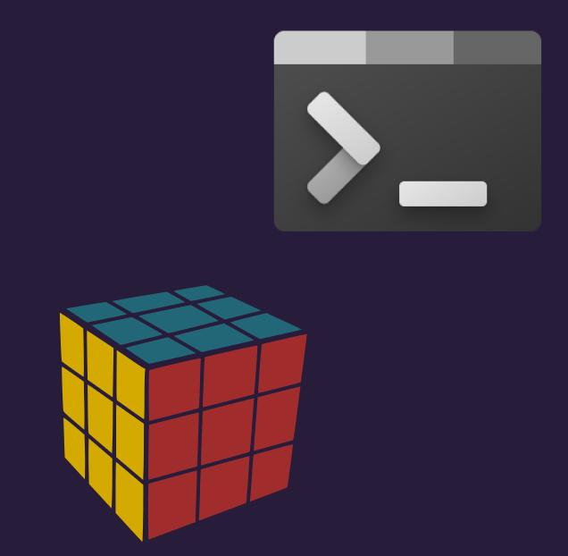

This simulator was done for a class assignment in my first Java class.
The user picks some moves and puts them in via the command line. The program then reads this,
does the opposite of each move, and solves the cube given the state by the user. It's a fairly
long program and not optimized but gets the job done. It was a project aimed at letting us explore
and object-oriented langauge and get comfortable with classes and methods.
This project was made purely in Java and has no frontend component. It is run and interacted
with solely through the command line. This allowed me to experience a more robust language and
made for an interesting time trying to format things in a way that made sense.
Though this project doesn't really have a user base outside of me, I did have to think about
how to best print the outputs to the command line in a way that made sense for a cube. I wanted
users to be able to easily see the moves they make printed out, along with the resulting cube.
While designing and building this app there were several issues that came up. It was the first time I
had
used Django
and there was a learning curbve there, especially regarding the database. I originally created it as a
static app, then
realized I needed it to be dynamic and had to redo everything I had just done. This was also the first
time I had
integrated an api into a project. It took many trials to get the api to work successfully and update
each day.


This project allowed me to learn a lot about dynamic apps, databases, and using a framework. I also
got experience with user authentication, login, signup, and password resets. This was the first complete
webapp
I had done and I learned a lot about the process. In addition I got comfortable using and navigating
GitHub, especially
in collaboration with other people working on the app.